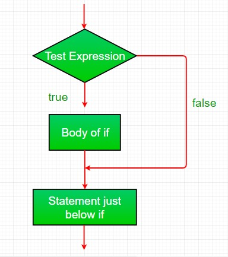
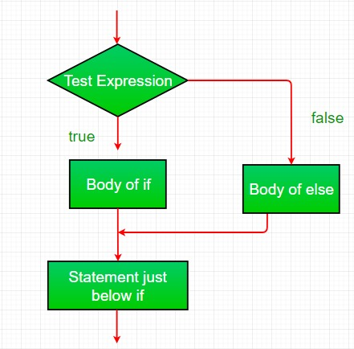
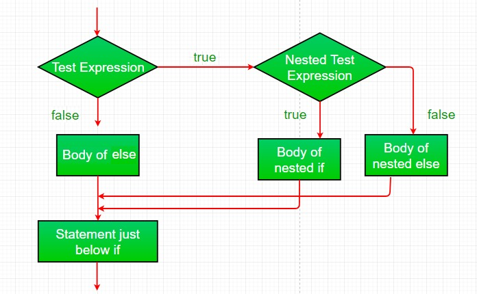
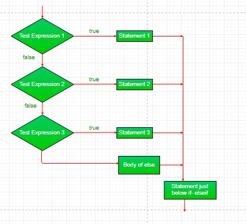
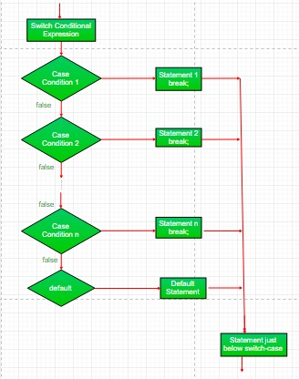

Selection Statements in JAVA
Java provides selection statements that allow the program to choose between alternative actions during execution. The choice is based on criteria specified in the selection statement. These selection statements are
if statement:
The simple if statement has the following syntax:
if (conditional statement)
{
// Executes this block if
// condition is true
}
It is used to decide whether an action is to be performed or not,
based on a condition. The condition is specified by conditional expression
and the action to be performed is specified by statement.
Here, condition after evaluation will be either true or false.
if statement accepts boolean values – if the value is true then
it will execute the block of statements under it.If we do not provide the curly braces ‘{‘ and ‘}’ after if(condition) then by default if statement will consider the immediate one statement to be inside its block.

if-else statement:
The if-else statement has the following syntax:
if (condition)
{
// Executes this block if
// condition is true
}
else
{
// Executes this block if
// condition is false
}
It is used to decide between two actions, based on a condition.
The conditional expression is evaluated first. If its value is true, then
if-else statement using ternary operator:
The if-else statement using ternary operator has the following syntax:You can replace the following code
if (expression) {
number = 10;
}
else {
number = -10;
}
with
number = (expression) ? expressionTrue : expressinFalse;

nested-if statement:
A nested if is an if statement that is the target of another if or else. Nested if statements means an if statement inside an if statement. Yes, java allows us to nest if statements within if statements. i.e, we can place an if statement inside another if statement.
if (condition1)
{
// Executes when condition1 is true
if (condition2)
{
// Executes when condition2 is true
}
}

if-else-if ladder:
Here, a user can decide among multiple options.The if statements are executed
from the top down. As soon as one of the conditions controlling the if is true,
the statement associated with that if is executed, and the rest of the ladder is
bypassed. If none of the conditions is true, then the final else statement will
be executed.
if (condition)
{
//statement;
}
else if (condition)
{
//statement;
}
.
.
else
{
//statement;
}

switch-case:
The switch statement is a multi-way branch statement. It provides an easy way to
dispatch execution to different parts of code based on the value of the expression.
Basically, the expression can be byte, short, char, and int primitive data types.
Beginning with JDK7, it also works with enumerated types ( Enums in java), the
String class and Wrapper classes.
switch (expression)
{
case value1:
//statement1;
break;
case value2:
//statement2;
break;
.
.
case valueN:
//statementN;
break;
default:
//statementDefault;
}
The syntax of the switch statement comprises a switch expression followed by the
switch body, which is a block of statements. The type of the switch expression is
non-long integral (i.e., char, byte, short, or int). The statements in the switch
body can be labeled, defining entry points in the switch body where control can be
transferred depending on the value of the switch expression. The semantics of the
switch statement are as follows:
- The switch expression is evaluated first.
- The value of the switch expression is compared with the case labels. Control is transferred to the statement associated with the case label that is equal to the value of the switch expression. After execution of the associated statement, control falls through to the next statement unless appropriate action is taken.
- If no case label is equal to the value of the switch expression, the statement associated with the default label is executed.

fall through:
The execution point of this code will jump to whichever case matches the
variable supplied to the switch statement. But, if the break statements
are omitted from the cases
switch(variable) {
case 1:
//do something
case 2:
//do something
default:
//do something
}
then all of the cases that come after the desired case will
additionally be executed, because there was no instruction to stop.
For example, say variable is equal to 1. In the first code example,
only case 1 will execute. In the second code example, cases 1, 2,
and the default case will execute because of the lack of break
statements.
This additional execution of cases is the "fall through" behavior.